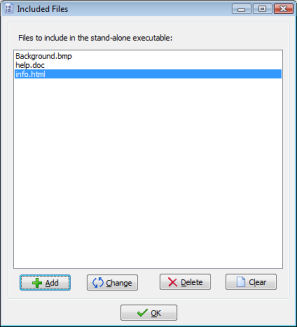
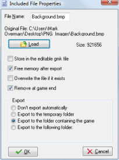

As has been indicated before, you can create stand-alone versions of your game. Sometimes your game will use additional files. For example you might want to include video files or text files that are used in the game. In some cases you want to add DLLs or images and sounds that are loaded during the running of the game. You can provide these together with the stand-alone executable but it is sometimes easier to include them in the file. In this way only one file needs to be distributed. Included files will default be exported when the game starts.
You can indicate the files you want to include in the executable in by choosing Included Files from the Resources menu. The following form will be shown:

At the top of the form is a list of files to include. Use Add to add a new file to the list, Change to change a selected file, Delete to delete the selected file, and Clear to clear the complete list. When adding or changing an entry, the following form will pop up:

Here you can indicate a number of properties. You can press the Load button to indicate which file must be included. You can change the File Name if you want to save the file under a different name than the original file name.
There are a number of options you can set. When you check Store in the editable .gm81 file the included file in not only added to the executable but also to the editable version of the game. The advantage is that you can e.g. send the editable version to somebody else and can be sure the file is still there. Also, you can remove the included file if you want or move it elsewhere without problems. The disadvantage is that the editable version of the game becomes larger and takes longer to load.
Checking the option Free memory after export means that after the file has been exported (when running the game) it will be removed from memory. If you want to be able to export it again later you should uncheck this option. If a file that is exported already exists it is normally not written. You can change this behavior by checking Overwrite existing files. Also, when the game is finished the files are normally not removed (unless they are in the temporary folder which is completely removed). You can change this by checking Remove at game end.
A word of warning is in place here. If you are testing your game, the working directory of the game is the directory where the .gm81 file is stored. If your include files are also stored here and you choose to remove them at the end of the game you might loose them alltogether! So better not store these files with the .gm81 file but e.g. in a subfolder!
Finally you can indicate to what folder the files are exported. There are four options here. In the default situation the files are exported in the folder where the stand-alone game is stored. This is also the working directory for the game. So the game can just use the file names to access them (no paths are required). This works well if the stand-alone is stored e.g. on the hard disk but will fail if it is stored on a read-only device, e.g. on a CD.
The second possibility is to indicate that the files must be exported into the temporary folder that is created during the running of the game. If you select this option you will need to provide the path to the temporary folder when you use the file name during the game. This path can be obtained using the built-in variable temp_directory. Don't forget to add the backslash in this case. So to e.g. play a video file you might type in the following piece of code:
{
splash_show_video(temp_directory+'\movie.avi',true);
}
Realize that this temporary folder is removed once the game is finished. So you e.g. cannot store save games or special information in this case. Only choose this option when you want the game to be run from a CD or when you do not write any files from within your game.
The third option is to indicate the folder to which the file must be exported yourself. If it does not exist it will be created. E.g. you could specify C:\MyGame. (Note that you need to provide a full patgh and that you should not include a backslash at the end.) This is only allowed when the game does not run in secure mode.
Finally, you can indicate not the export the file automatically. In this case you should use e.g. the function export_include_file(fname) to export it yourself when required.
| Converted from CHM to HTML with chm2web Pro 2.85 (unicode) |